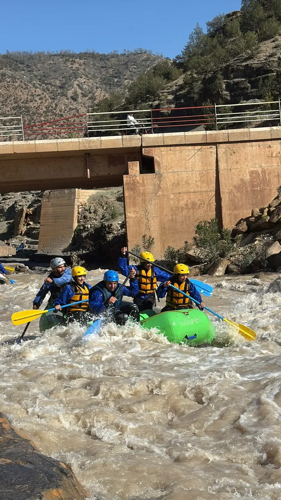

اكتشاف01المسار 01 · وادي أحنصال
من أموگر
إلى تيلوكيت
بداية جميلة لاكتشاف النهر، تجمع بين المغامرة والمناظر الطبيعية واللحظات الممتعة.
↝ 12 كمنحو ساعتين إلى ثلاث ساعاتبمرافقة مرشد
ماذا تشمل الرحلة؟
- اللقاء في المكان المتفق عليه
- المعدات وإرشادات السلامة وتجربة عملية
- نقل بسيارة رباعية الدفع إلى أموگر
- نزول مع توقفات وتصوير وسباحة إذا سمحت الظروف
- العودة من قنطرة تيلوكيت
400 درهم للشخصسعر المسار